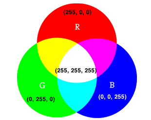

RGB Values
RGB values still range from 0 - 255. However, now there are three values per pixel rather than just one: red, green and blue. Each pixel can have any combination of red, green and blue within this range, producing the spectrum of colors below.


RGB is additive color, menaing that the sum of all colors at full intensity is white. Absence of color is black.
Play with the sliders below to make your own RGB colors!

RGB and the Human Visual System
"The choice of primary colors is related to the physiology of the human eye; good primaries are stimuli that maximize the difference between the responses of the cone cells of the human retina to light of different wavelengths, and that thereby make a large color triangle.[3]"-- wikipedia

Image Data and Manipulation
When an image is recorded, RAW pixel data is captured by the sensor. This data must be synthesized and quantized. This is where image compression comes in. In order to simulate how our eyes process environmental light, cameras and editors alter image data. Image tones may be pulled into a certain range. A pleasing S-Curve may be applied to the image tones to increase contrast, for example.
Got it. Next!